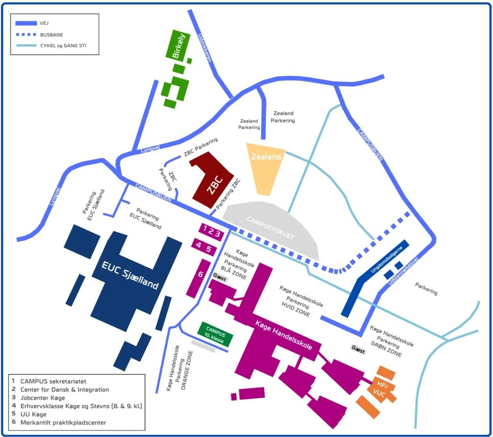

Parkering
Ah, parkering – min gamle nemesis! Hvis du skal køre til skolen, er det en rigtig god idé at parkere i båse med de gule skilte. Det betyder også, at du ikke må parkere ved siden af vejen, på græsset eller andre steder på skoleområdet, da det kan resultere i en afgift eller bøde.
Du kan ikke få en parkeringsafgift nedsat, heller ikke selvom du eksempelvis er studerende på SU, lærling, modtager overførselsindkomst eller er pensionist. Dette gælder også parkeringsafgifter udstedt af politiet.
-politi.dk

Hvis du er sent på den, kan du regne med, at alle Zealands parkeringspladser er optaget. MEN, du kan registrere din nummerplade hos ZBC/Handelsskolens registreringsstander ved indgangen for at undgå en bøde – de har ofte rigeligt med plads!

Husk: Gule skilte er for Zealand – ligesom skolens farver på denne side.
Handelsskolen – grøn og blå – bare fordi!
Set bort fra den manglende plads!
Når du træder ind ad Zealands hovedindgang,
vil du se en stander og et papir med en QR-kode ved siden af standeren.
Det er netop den stander, jeg nævnte tidligere, som bruges til registrering af
bilens nummerplade for parkering.
Standerens registrering efter et døgn,
mens QR-koden gælder for hele din studieperiode.